יש לכם עסק עם שליחות, אבל במקום להרגיש שהעסק גדל ומתבסס, אתם עדיין דואגים מאיפה יגיעו הלקוחות הבאים?
הנה הצלחות שלקוחות משתפים תוך כדי העבודה יחד
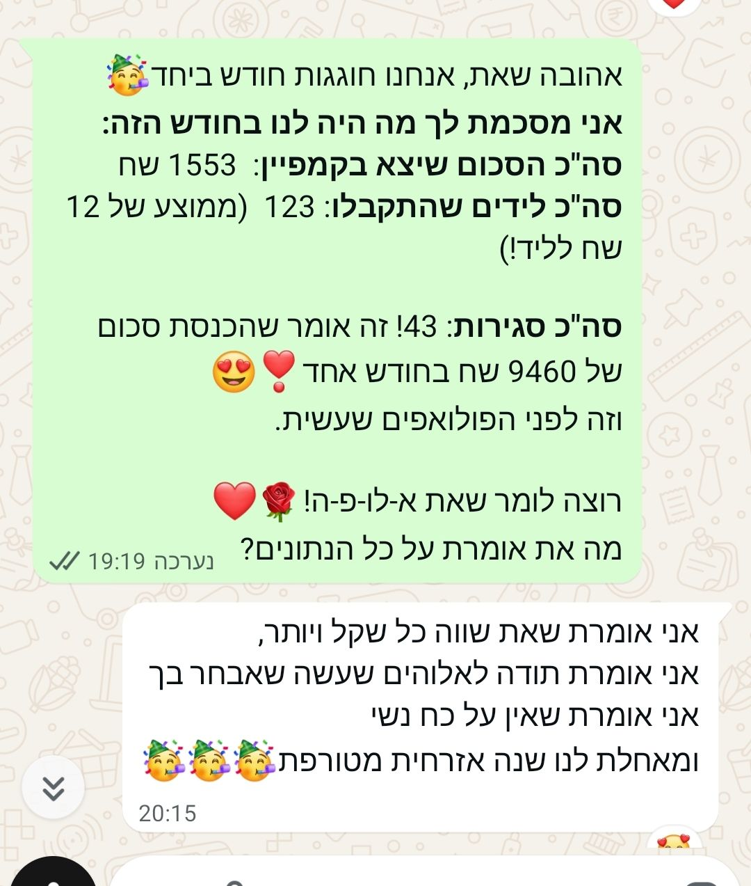
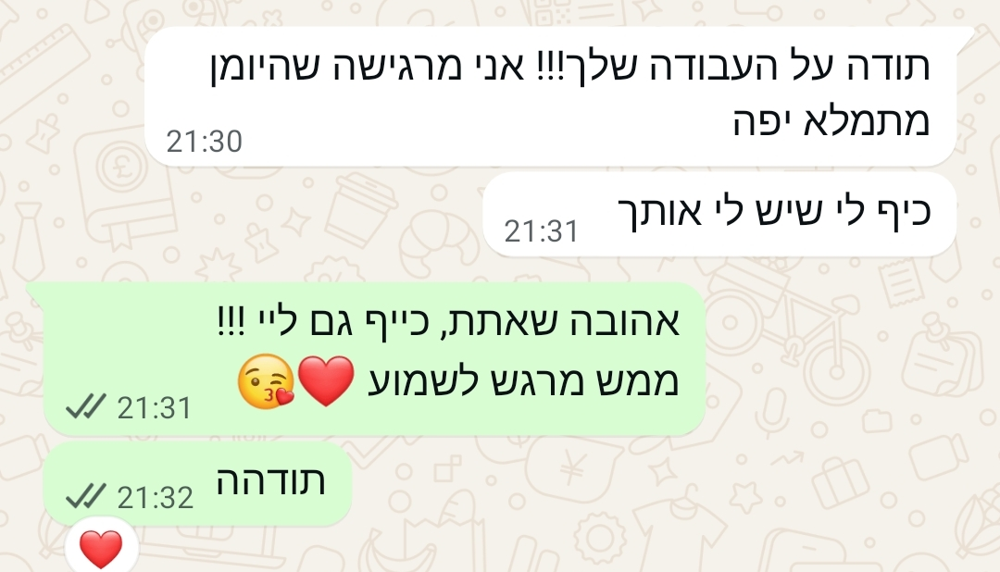
עוד סיפורי הצלחה
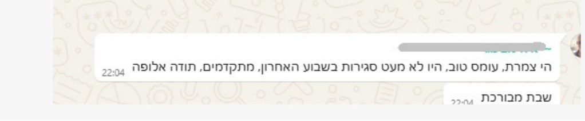
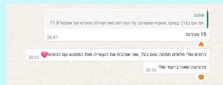
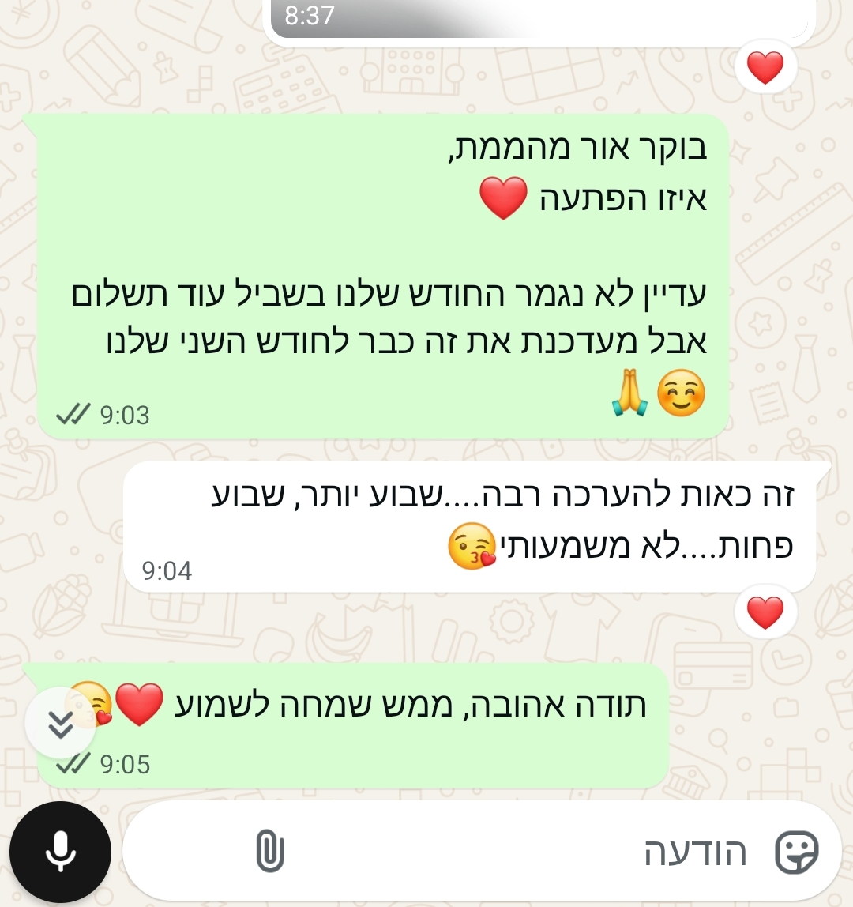
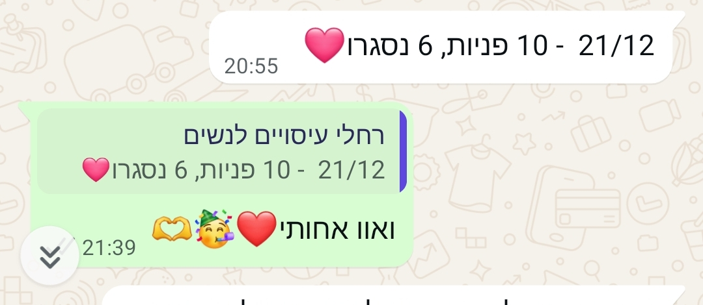
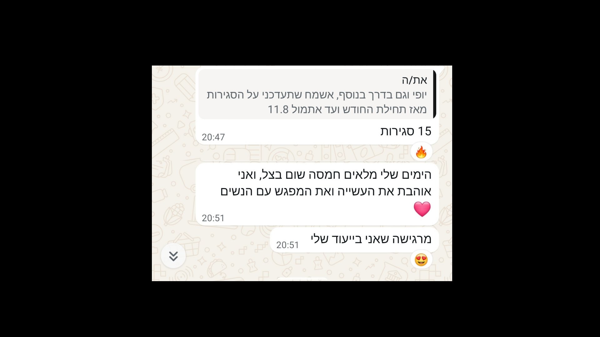
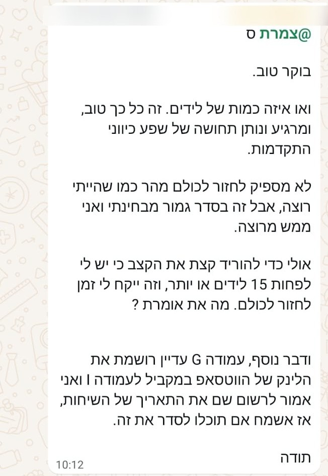
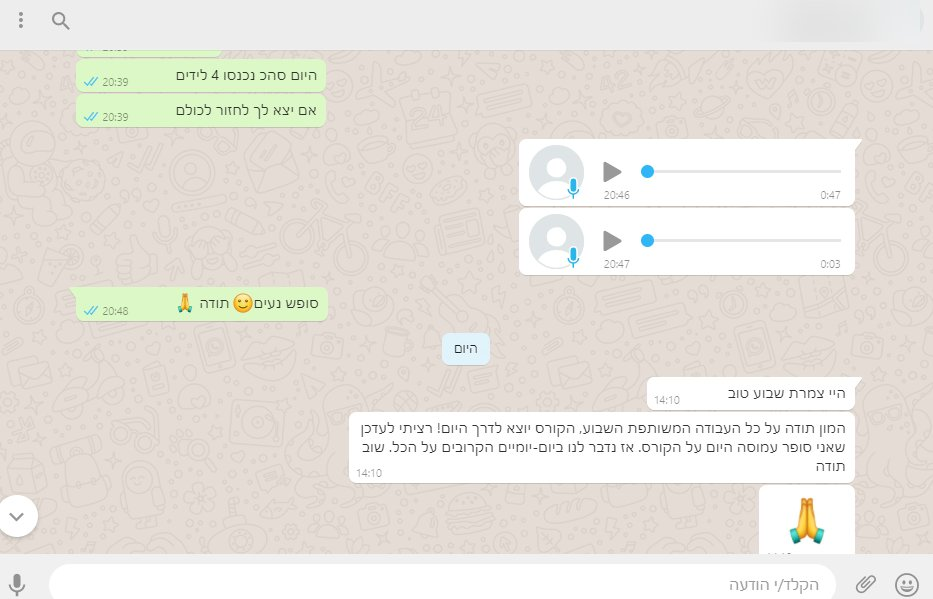
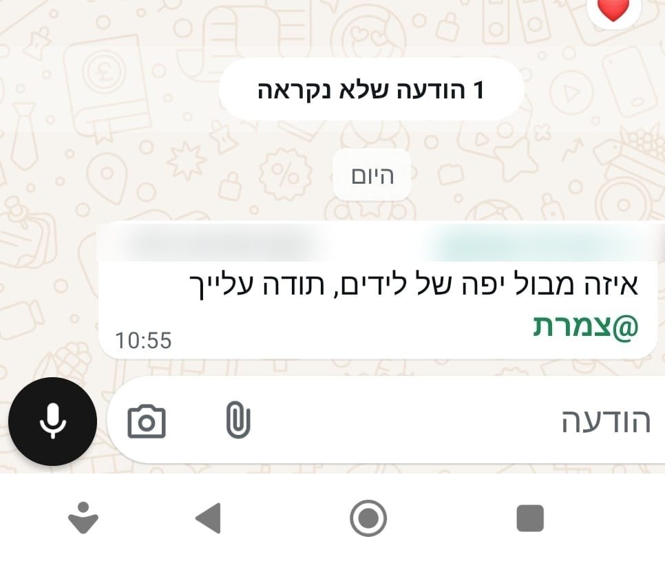
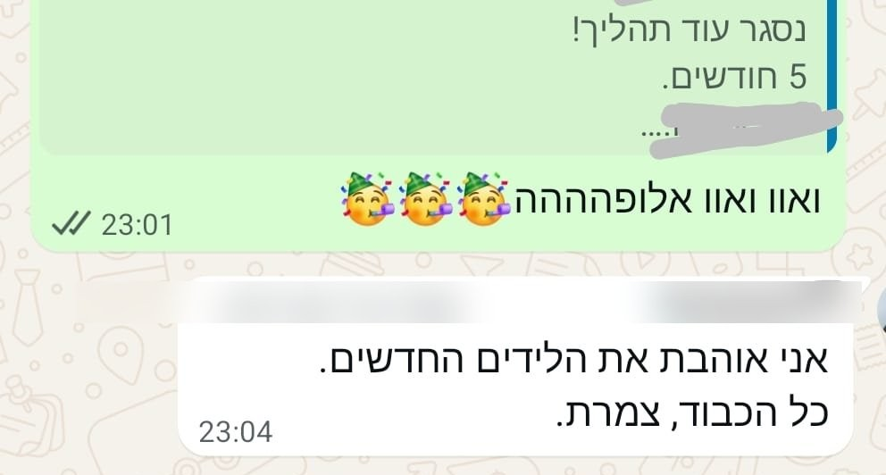
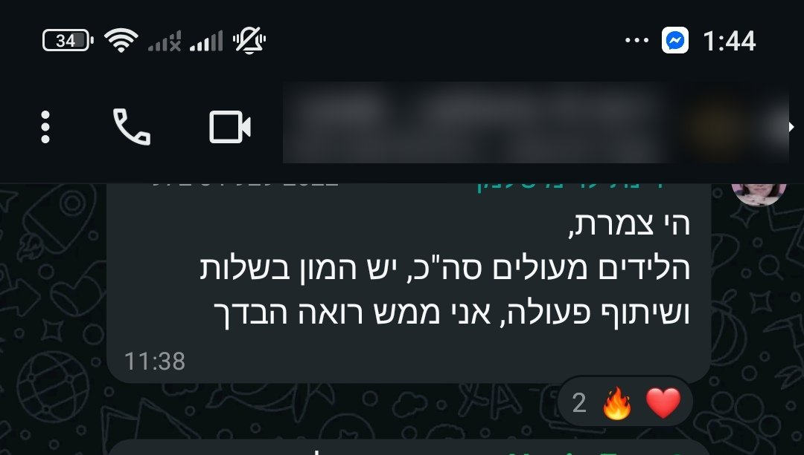
הצצה לנתונים אמיתיים מתוך מערכת הפרסום של Meta.
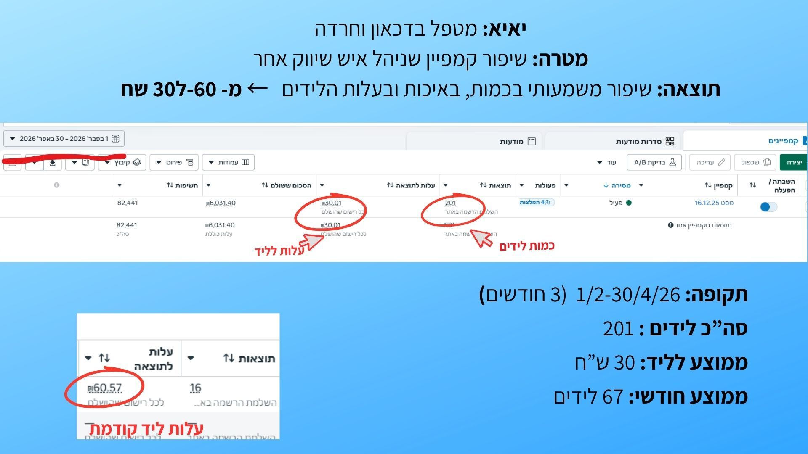
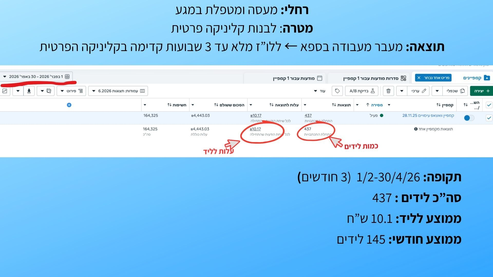
תוצאות נוספות מתוך מערכת הפרסום של Meta
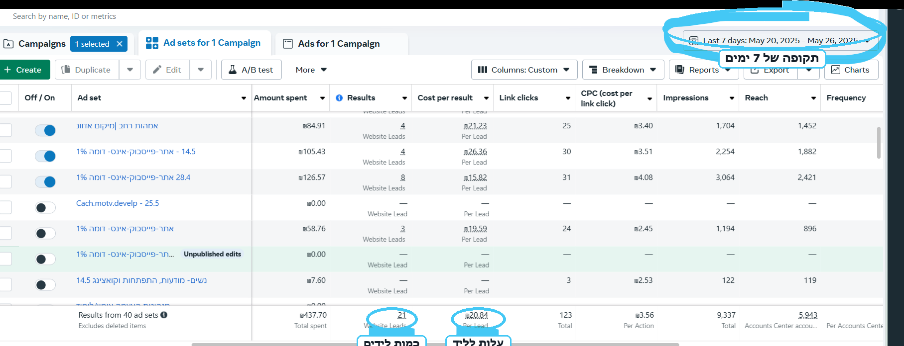
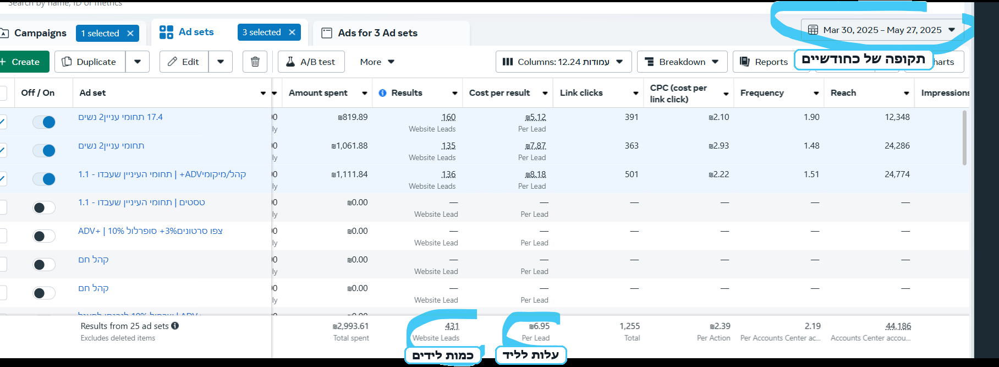
קמפיין וובינר
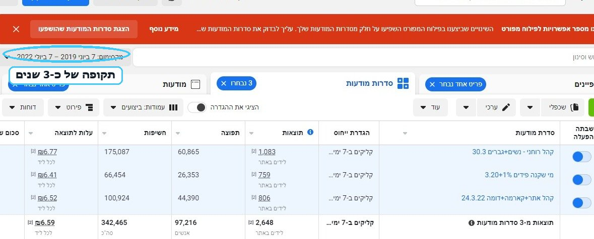
הכנתי סרטון שיעזור לכם להבין למי קמפיין ממומן מתאים, מה חשוב שיהיה בעסק לפני שמתחילים, ואיך הוא יכול לעזור לייצר תנועה קבועה של פניות בלי להיות עסוקים כל היום בשיווק.
כתבו לי "שיחה" בוואטסאפ ונקבע שיחה קצרה כדי להכיר את העסק ולבדוק התאמה הדדית.
לשיחת התאמה בוואטסאפ